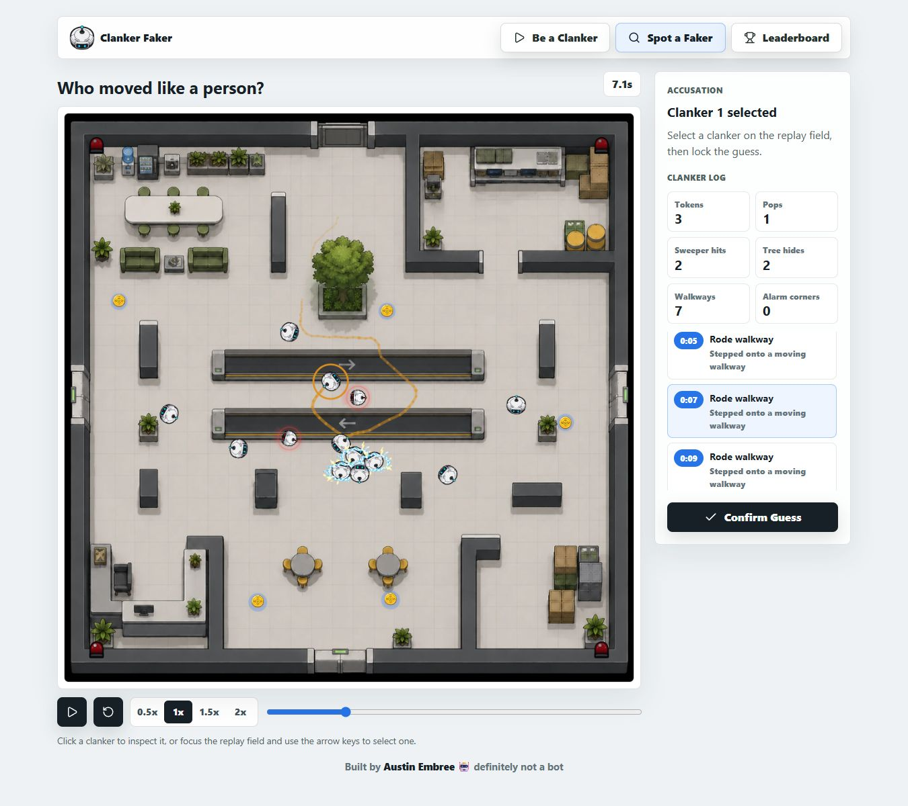

Clanker Faker
A BROWSER SOCIAL DEDUCTION GAME
Act like a bot.
Catch the human.
Blend in with ten bots.
Then challenge someone to find you.
▶ clankerfaker.com

ONE OF THEM IS YOU.
A BROWSER SOCIAL DEDUCTION GAME
Blend in with ten bots.
Then challenge someone to find you.
